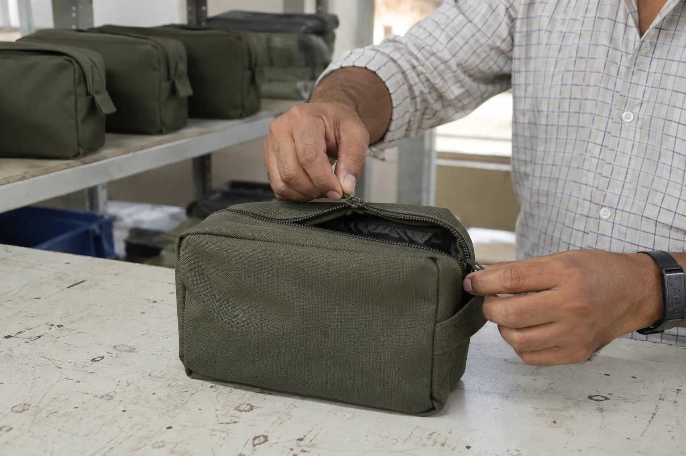
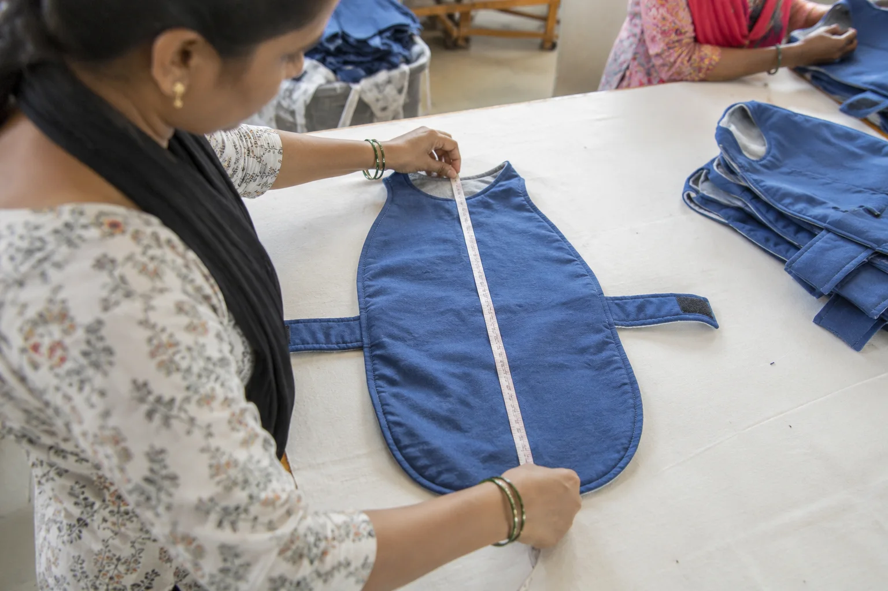

Third-party product inspection in India
When your goods are being made far from your desk, an independent on-site check helps close the gap between what was ordered and what is ready to ship across a wider range of product materials and manufacturing processes.
Send your brief by email or WhatsApp, choose what suits your team.

For overseas buyers, importers and brands: independent verification at a supplier in India, based on your order and product requirements. Product-specific scope is confirmed before the visit.
Timing matters
Inspect at the point that answers your question
“Inspection” can mean different things. The best visit depends on whether you need to catch problems early, track a running order or make a final shipment decision.
Before production
Confirm materials, approved references and readiness before the order progresses too far.
During production
Review work in progress when an early correction could save a later surprise.
Before shipment
Check available finished goods, order details and packing before release.
The exact inspection stage and checks are agreed for each order. A final inspection cannot replace checks that needed to happen earlier in production.
What the visit can cover
A buyer-led checklist, not a generic glance
- Product identity, quantity and assortment
- Materials, workmanship, finish and visible defects
- Measurements, components and practical function checks relevant to the item
- Labels, packaging and carton condition
- Open questions against the approved sample or purchase order
Apparel, cotton goods and pet clothing call for different checks from footwear, outdoor gear or manufactured metal and wood products. We agree the relevant checks and any sampling approach before the visit.
Why independence helps
Make the decision with evidence
A supplier's update tells you what the factory believes is ready. An independent inspection adds an outside observation against your requirements, with findings you can raise while the goods are still at the source.
It is especially useful with a new supplier, a product change, a time-sensitive shipment or a recurring issue you want checked on site.
How we work
Simple to commission, specific to your order
Share the brief
Send the product, factory location, purchase order, specification and inspection objective.
Confirm the visit
We align on timing, access, scope, reference documents and the findings you need.
Act on the result
Review the documented observations and discuss any corrective action with your supplier before shipment.
From production to packing
See the stage that matters to your buying decision
An inspection during production can expose construction drift while corrective action is still practical. A pre-shipment visit can show what is finished, packed and presented for release. We scope the visit around the decision you need to make rather than treating every inspection as the same event.


Evidence with boundaries
What a third-party visit can, and cannot, establish
Observed at the supplier
The visit can document the goods made available, visible workmanship, selected dimensions and practical checks, order details and packing. Findings are tied to the agreed scope, references, timing and sample presented.
Not a blanket guarantee
An inspection does not certify every unit, replace accredited laboratory testing or guarantee future supplier performance. Where a regulated test or specialist assessment is required, it should be arranged separately and included in the buyer's quality plan.

Book the right visit
Match the inspection stage to the risk
A first inspection does not always need to wait until the order is packed. If the risk is construction, materials or workmanship, a during-production visit may reveal the problem while the factory can still respond. If the decision is shipment release, the finished quantity and packing condition become central.
When you contact us, tell us:
- what decision the visit needs to support;
- the product, order quantity and percentage completed;
- the supplier address and available inspection dates;
- the approved sample, specifications and known concerns; and
- whether laboratory tests or destination-market documents are handled separately.
We will confirm whether the proposed timing and scope can produce useful evidence before you commit to the visit.
Have goods in production now?
Email or WhatsApp the factory city, product, current completion status and the latest inspection date that works for your order.
More product-specific examples
More product checks before shipment
Small functional or dimensional differences can make a finished product unsuitable for the buyer. The agreed inspection brief should identify which closures, measurements and construction details need to be checked at the available production stage.


Common questions
What buyers often ask
Is third-party inspection only for leather?
No. Leather and footwear are part of our background, but we now welcome inspection briefs for a broader range of products. Tell us the item, buyer standard and factory location so we can confirm the right inspector and scope.
What is the difference from an AQL inspection?
Third-party inspection describes who checks the goods: an independent party. AQL describes one possible sampling and acceptance method. A third-party visit can use an agreed AQL plan when that is right for the order.
Can you inspect in different Indian cities?
We assist buyers across India. Send the factory location and dates so we can confirm availability and travel arrangements.
Related services
Have someone check before you commit
Send us your product, supplier city and decision deadline.
Email is useful for specifications and attachments; WhatsApp is convenient for quick questions and photos. If you do not receive an email reply, please follow up by WhatsApp or phone.